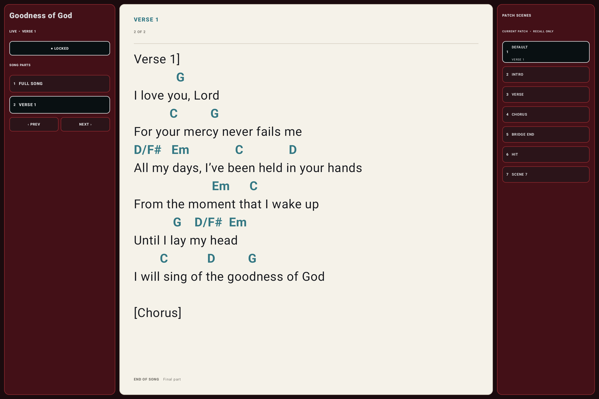

How will you use the guide?
Choose the layout that matches the screen in front of you. Both editions include the complete manual, real screenshots, searchable chapters, and the interactive first-performance course.

Phone guide
Single-column lessons, compact navigation, and large touch targets for smaller screens.
Open phone edition →
Tablet guide
Persistent chapter navigation, wide native tablet screenshots, and tablet-sized reading panels.
Open tablet edition →OpenKeys visual manual
You can switch device layouts at any time from the tutorial header.